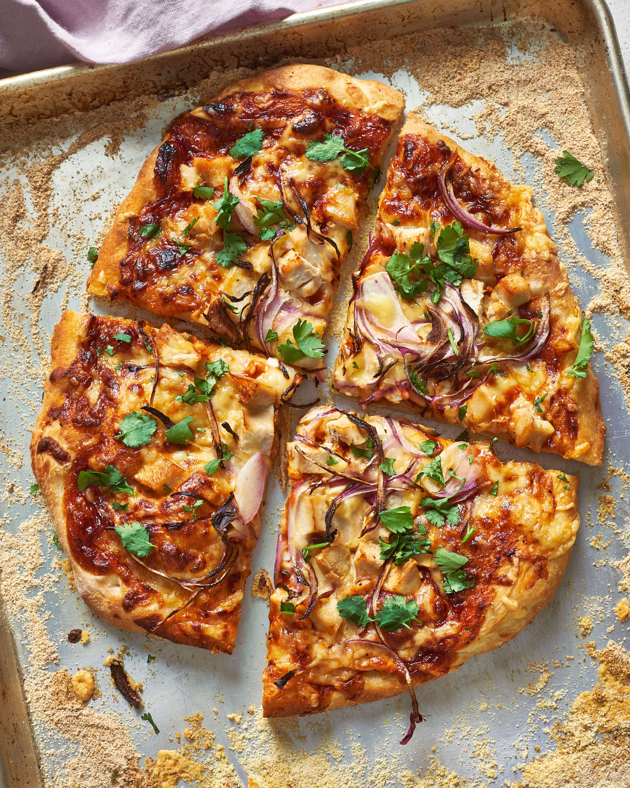

BBQ Chicken Pizza

Description
This weeknight pizza couldn't be easier. It's savory, sweet, tangy, and it only takes 15 minutes of bake time.
Who could ask for anything more?
Ingredients
- 1 pound pizza dough
- Finely ground cornmeal for dusting
- All-purpose flour, for rolling out dough
- 2 teaspoons olive oil
- 1/2 cup BBQ sauce
- 1 cup Mozzarella cheese
- 1 cup shredded Gouda cheese
- 8 oz cooked chicken breast
- 1/4 cup thinly sliced red onion
- Chopped fresh cilantro, for garnish
Steps
- Arrange a rack on the bottom third of the oven, place a baking sheet upside down on the rack, and heat up to 450 degrees F.
- Divide the dough into 2 pieces. Dust a 12-inch piece of parchment paper with cornmeal, place a piece of dough on it, and stretch into a thin, 10-inch round.
- Carefully remove the preheated baking sheet and use the parchment paper to slide the dough directly onto the back. Brush the dough with olive oil, then spread half the BBQ sauce into a thin layer onto the dough.
Sprinkle with half of the mozzarella and Gouda cheeses. Scatter half of the chicken and onions all over the cheese.
- Bake until the edges are golden brown and crisp, 10 to 12 minutes. Garnish with the cilantro and cool for 2 minutes before slicing and serving. Repeat with the remaining dough.